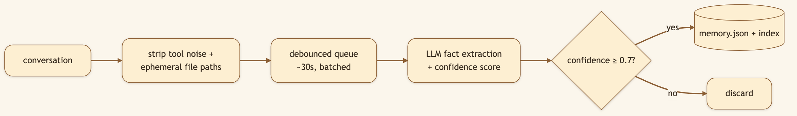
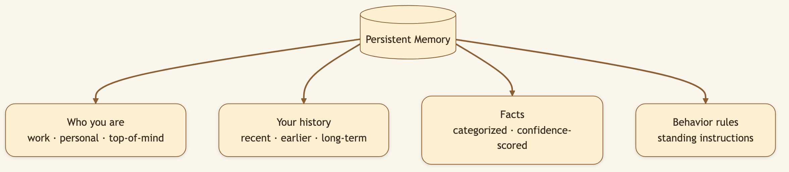
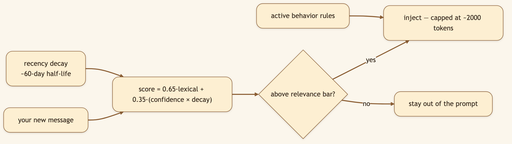
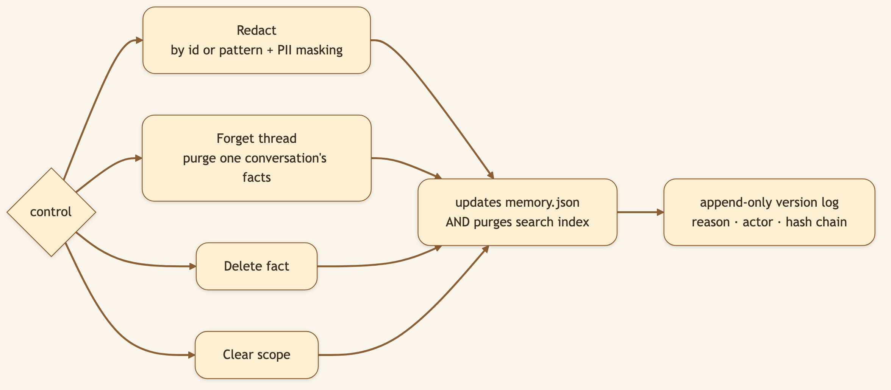

LinkedIn hook (use as the post's first line): "Every fresh chat with a normal assistant starts from amnesia — you re-explain your stack, your preferences, your project, again. We built memory that learns you and carries it across every session." Audience: LinkedIn → Medium. Power users, developers, anyone tired of re-briefing their AI every morning.
The Knowledge Vault remembers the world — the things you research. Persistent Memory remembers you — how you work, what you prefer, what you're focused on this month. It's the difference between an assistant you re-brief every morning and one that already knows the drill.
🖼️ [User add: image containing — a real screenshot of the memory panel in the UI showing extracted facts with categories + confidence scores, and a behavior rule. Capture from the running app's memory view.]
You don't fill out a profile. After a conversation, an LLM extracts facts — preferences, expertise, goals, working patterns — each with a category and an explicit confidence score. Only facts above a threshold (default 0.7) are kept.


A naïve system dumps everything into the prompt and drowns the model. CapyHome retrieves by relevance to your current message — and respects recency.

The agent surfaces the three things that matter for what you just asked — not the eighty things it knows in total. Last quarter's priorities fade behind this week's.
Memory you can't inspect or delete is a liability. CapyHome's memory is a local JSON file you own, and every control is real.

A forgotten fact is genuinely gone — not just hidden — and optional append-only versioning records each change with a reason and a hash chain for audit-grade accountability.
🖼️ [User add: image containing — the redact/forget controls in the memory UI, or a snippet of memory.json on disk showing facts + confidence. Capture from the running app or the file.]
.capyhome/memory.json, in two scopes — global (you everywhere) and workspace (per-project) — merged at injection time with workspace taking precedence.MemoryMiddleware captures user inputs + final responses (no tool calls), a MemoryUpdateQueue debounces (~30s, configurable), and MemoryUpdater calls an extraction LLM that emits newFacts / factsToRemove with confidence scores.0.65·lexical + 0.35·(confidence × decay) with a configurable half-life (default 60 days); injection is capped (default 2000 tokens, measured with tiktoken).recall tool for explicit fetch; /api/memory/{redact,forget-thread,clear,facts,rules,versions}; PII masking on redaction; optional optimistic-concurrency via expected_sha.fact_confidence_threshold (0.7), max_facts (100), decay_half_life_days (60), max_injection_tokens (2000), injection_relevance_threshold (0.5).recall tool).Title card: "An AI that remembers you, not your chat history."
[0:00–0:10] Hook: "Every new chat, I re-explain who I am, what I use, what I'm working on. Exhausting. So I gave my AI a real memory."
[0:10–0:25] Screen — chat 1, state a preference: "In one chat I just mention: I like concise answers, no preamble, and I work in TypeScript. That's it — no form to fill."
[0:25–0:45] Screen — brand new chat next 'day': "New chat, next day. I ask something — and it answers concisely, in my stack, without being reminded. Here's the memory panel: it extracted those facts on its own, with confidence scores."
[0:45–1:00] Screen — redact a fact: "And it's all a local file I control. Don't like what it learned? Redact it — gone from the file and the index. Open source, link below."
Tell CapyHome a preference in one chat. Start a brand-new chat the next day and watch it honor that unprompted. Then open the memory panel and delete anything you don't like.
Back to the series index.